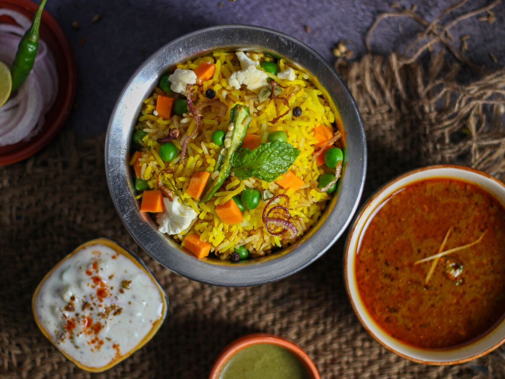

Vegetable Biryani

Description
This vegetable biryani is a festive South Indian favourite. Long-grain basmati rice is layered with spiced mixed vegetables and slow-cooked with whole spices until every grain is separate and aromatic.
It is traditionally served with raita or salan on special occasions.
Ingredients
- 2 cups basmati rice
- Mixed vegetables (carrots, beans, peas, cauliflower, potato)
- 2 large onions, thinly sliced
- 1 cup yogurt
- Ginger-garlic paste
- Biryani masala / whole spices (bay leaf, cinnamon, cloves, cardamom)
- Mint and coriander leaves
- Saffron soaked in warm milk (optional)
- Ghee or oil
- Salt
Steps
- Cook the mixed vegetables with yogurt, ginger-garlic paste, biryani masala and salt until almost done.
- Parboil the rice with whole spices until 70% cooked, then drain.
- In a heavy pot, fry the sliced onions until deep golden brown.
- Layer the cooked vegetables at the bottom, then add the parboiled rice, fried onions, mint, and coriander.
- Seal the pot tightly and cook on low heat (dum) for 20-25 minutes.
- Gently mix and serve hot.
Keep the heat very low during dum cooking — high heat will burn the bottom layer.
Let it rest for 10 minutes before opening the lid.